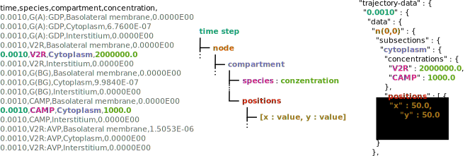

This tool was developed to visualize simulation data of the renal hormone response. We provide different forms of representation of the trajectories. On the one hand simple line charts but also heatmaps to reproduce the behaviour of species by means of color gradients. In addition, by summing up data, the representation can be individually adjusted.
For the program to process the data you need a data file. It is possible to read csv files (left) or json files (right). The data will be restructured to a uniform format (center) :
Bring your data to live with SiNGA-simulation-visualization.